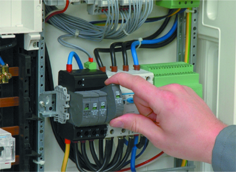

Villamos védelmek és automatikák
Ez az oldal a Villamos védelmek és automatikák tematikáját tartalmazza.
Tematika:
- A magyar villamos energia rendszer felépítése
- Alapfogalmak. Védelmek, automatikák feladata, követelmények
- Kapcsolat a környezettel, a technológiával. Az alkalmazott zárlatszámítási módszerek áttekintése
- Hálózati hibák érzékelésének lehetőségei
- A védelmek szelektív beállításának elve, feltételei
- Túláramvédelmek alkalmazása és korlátai, beállításuk számítása különböző hálózatképek, berendezések esetén
- Impedancia relék működési elve. Érzékelési egyenletek és zárlatfajták kapcsolata
- Statisztikai számítások a táblában
- Szelektív beállítás feltételei, karakterisztikák
- Távolsági védelem fő részei. Érzékelési egyenletek, szelektív beállítás feltételei, karakterisztikák
- Az alállomási irányítási rendszer és a védelmi rendszer együttműködése
- Alkalmazott zárlat-, és földzárlatvédelmi rendszerek